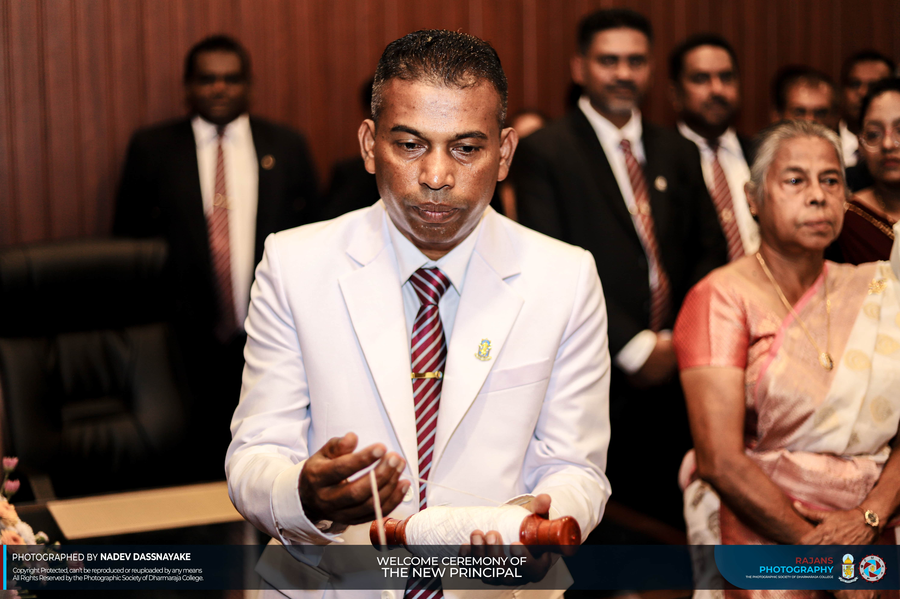

24th PRINCIPAL OF DHARMARAJA COLLEGE
Mr. Namal Chandanakumara Assumes Duties
Since 1985, the Carlos Brothers have been roasting the world's finest beans to create unforgettable coffee experiences.
Since 1985, the Carlos Brothers have been roasting the world's finest beans to create unforgettable coffee experiences.

On April 21st, Dharmaraja College held a ceremonial welcome for its 24TH PRINCIPAL, Mr. Namal Chandanakumara. The event began at the main gate, where deputy principals, assistant principals, staff, and students received him. The college Eastern Band, led by Sgt. Kaveesha Kumaranayake, headed the initial procession. As the group moved forward, the Western Band, led by Sgt. Sasiru Munasinghe, took over the lead. Mr. Namal Chandanakumara entered through a traditional welcome by the Wes dance troupe, passing under flags hoisted by the prefects and receiving a salute from the cadets. After hoisting the college flag, he officially signed in to assume his duties.
This appointment serves as a return to his alma mater. Born in Nawalapitiya on June 21, 1976, Mr. Namal Chandanakumara attended Ginigathhena Primary School before completing his secondary education at Dharmaraja College. As a student, he balanced academics and co-curricular activities, studying in the Physical Science stream for his Advanced Levels. He earned a degree in Physical Science from the University of Peradeniya and later obtained a Postgraduate Diploma in Education, a Postgraduate Diploma in Science, and a Master’s Degree in Education.


Mr. Namal Chandanakumara began his career as an Advanced Level teacher at Kotmale Gamini Dissanayake College and Sri Pada Central College. In 2009, he passed the Administrative Service Examination and became an Assistant Director of Education in the Hatton Zone, where he eventually served as Deputy and Assistant Director. His leadership background includes tenures as the Principal of Sumangala College and Acting Principal of Kingswood College. In 2025, he was appointed Provincial Director of Education for the Central Province before returning to lead Dharmaraja College.